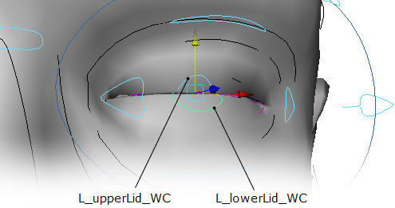
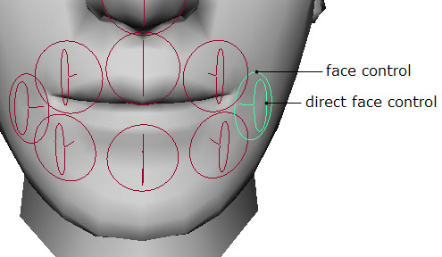
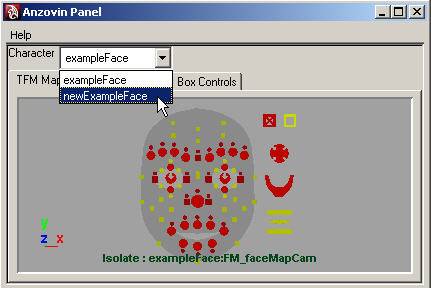

The Face Machine Manual
Introduction
The Face Machine (aka TFM) is an auto-rigging tool for Maya. It rigs faces. (If you need to rig bodies, you'll want to take a look at our other auto-rigging tool, The Setup Machine.) More specifically, TFM sets up an powerful, intuitive rig for facial animation. Whether you need cartoony exaggeration, subtle realism, or just some fast, solid lipsync, this rig can do the job. Oh, and TFM does intelligent point weighting. And when we say intelligent, we mean "smart enough to weight the lids of a closed eye, correctly."
We made The Face Machine because we wanted to use it ourselves. We hope you'll find it useful, too.
Getting Started
The Face Machine is a plug-in for Maya. Once you've installed it, you'll need to use Maya's Plug-in Manager to load it. You'll also need to have your serial number handy, so if you haven't gotten it yet, you'll need to wait a little bit longer. Hang in there. Keep checking your e-mail. And if you don't get it within 24 hours of placing your order, e-mail sales@anzovin.com.
To load TFM, select "Plug-in Manager" in the "Window > Settings / Preferences" sub-menu:
Which will bring up this:
Click the "loaded" checkbox next to faceMachine.mll You'll be prompted to enter your serial number. Once you've done that, you'll probably want to check "auto load" as well, so that you won't need to reload TFM every time you restart Maya.
Now you can get started on...
The Rigging Process
To rig a face with The Face Machine, you start by adding a widget to your scene. If you've used The Setup Machine, our body rigging software, this process should seem familiar. For those of you just joining us, yes, "widget" is the technical term. It's what we call a set of pre-rig controls and influence objects. The influence objects will ultimately control your character's geometry. The widget controls are just there to help you position the influence objects, so don't get too attached to them. They'll be replaced by (much more powerful) animation controls later on.
Figure 0.1: The Face Machine Widget
The widget controls and influence objects are both NURBS curves, but the influence objects are black (and non-selectable), while controls are blue (and controllable.)
Once you've imported the widget, your next step will be to fit it as closely as possible to the face, by moving, rotating, and/or scaling the widget controls. There's a simple hierarchy of controls, allowing you to do some quick overall positioning and then follow it up with more detailed tweaking. If necessary, you can even edit the influence object's curves directly. When TFM does its auto-rigging magic, the face geometry will be weighted to those curves, so a good fit is essential.
Once you've got that, you just tell TFM which piece(s) of geometry are the face -- and optionally, the eyes, teeth, and/or tongue. Then save your file and click "Rig." In seconds, you'll have a fully-rigged face. (Okay, possibly several minutes' worth of seconds, depending on the complexity of your face and the horsepower of your hardware.)
So that's the overview. If you've got a character ready to rig and a deadline looming, you can go on ahead to Step 1. Otherwise, you might want to consider...
Step 0: Modelling for rigging.
The Face Machine is flexible enough to rig virtually any face (as long as it's basically humanoid). However, if you're creating a model from scratch, following these guidelines will improve the end result.
0) The face MUST be a poly mesh. Note that this restriction doesn't apply to the eyes, teeth, or tongue -- just the face.
1) Use edge loop modelling. This is a methodology, not a specific technique, and a detailed explanation is beyond the scope of this manual. In brief, model your face such that edge loops follow its natural contours. This will yield smoother deformations, and is especially helpful around the mouth and eyes. It also helps the auto-weighting system to weight the mouth and eyes correctly.
2) Use enough geometry -- but not too much. Of course, a low-poly face won't give TFM (or you) much to work with, but going high-poly too soon can also be a mistake. You can usually subdivide later, and get better performance in the meantime.
3) Beware of unnecessary n-sided polygons, excessively non-planar polygons, and misplaced geometry borders (i.e., two "border" edges next to one another, forming an apparent single edge).
4) If necessary, separate the eyes, tongue, and teeth from the head geometry. Technically, this is only necessary if you want to use the advanced auto-weighting system, but considering how much time that's likely to save you, you probably do.
5) Model the teeth with an overall width that's proportionate to the head. It's a common mistake to make them too wide, ignoring the volume of the cheeks. Take a look at a skull and you'll see that they're actually quite narrow. And because TFM calculates certain cheek deformations based on the teeth, it's worth checking to make sure they're right.
6) Model the eyelids closed instead of open. Although TFM can handle it either way, starting from a closed position is likely to work better.
7) If possible, use separate meshes for the face and body. The rig will be faster if TFM can be applied to just the face, rather than a whole model.
Step 1: Add the Face Machine widget.
This one's easy. Find your TFM menu -- it should say "The Face Machine," and it should show up in any of the Maya menu sets. (If you can't find it, go back to the Getting Started section.)
Figure 1.1: The Face Machine Menu
The TFM menu will look something like Figure 1.1. Go to the Pre-Rig sub-menu. Then select "Add Face Machine Widget." This will add the widget to your scene.
Figure 1.2: The Widget
The widget will be at the origin of your scene. (If you don't see it, make sure Show NURBS Curves is on.) There will also be a new node called "faceMachine" in the Outliner, but you shouldn't need to do anything with that. (In fact, you really shouldn't do anything with it, and we mention its presence only for completeness.)
Step 2: Positioning controls
To begin positioning the widget, grab the big blue circle around the widget (which you'll find is named Face_Machine_WC), then move and scale it such that the influence objects approximately fit your face.
Figure 2.1: Positioning The Widget
The key word at this stage is "approximately" -- and the caveat is no non-uniform scaling. Again, experienced TSM users will nod sagely. For those unfamiliar with this quirk, "non-uniform scaling" means making any of the scale values -- ScaleX, ScaleY, or ScaleZ -- a different value from the others. Or, in visual terms, making the circle into an ellipse. For reasons too complicated to explain here, it is very important that the circle known as Face_Machine_WC remain a circle, and all its scale values remain exactly equal to each other.
So, once you've used this control to put the influence objects in the general area of the face, it's time to use some more specific controls to get a more specific fit. To begin, go to the Pre-Rig sub-menu of The Face Machine menu, and select "Show Widget Controls (Level One)."
Figure 2.2: The First Level of Widget Controls
You will now see a number of controls, most of them blue. All of these blue controls can be moved, rotated, and scaled -- uniformly or nonuniformly. The gray controls will automatically mirror the position of their opposite number. (If your face is asymmetrical, you can turn this mirroring off. Select one or more controls, then choose "Unmirror Widgets" from the Pre-Rig menu.)
Using these controls, you should be able to get a closer fit between the influence objects and your face. Still, it's not going to be perfect, so don't obsess over it. Once you've got a reasonably good fit, it's time to switch to Level Two.
Figure 2.3: The Second Level of Widget Controls
To display these controls, select "The Face Machine > Pre-Rig > Show Widget Controls (Level Two)." (You may also want to uncheck "Show Widget Controls (Level One)," since you probably won't be moving those at this point.) There are quite a few controls in Level Two, any of which can be moved, rotated, scaled, etc. For most faces, this will allow you to get a very close fit between the influence objects and your face. You should pay particular attention to the eyes and mouth. These are the most complex areas of the face, both for rigging and auto-weighting.
Many of the Level Two controls consist of curves that "float" a small distance away from their pivot point. This is for ease of selection. The pivot point represents where the control actually "is," and you'll want to pay attention to that as you position the control. Since many of the Level Two controls are meant to be positioned with their pivots resting on the surface of the face mesh, in some cases you may want to use Maya's "snap to points" mode for easy placement. You can turn it on using the magnet-and-point icon in the status line:
Fitting the Eyes
When you're fitting the eyes, you should actually start with the eye pivots. Since the correct location of this pivot is based on the size of the eyeball, moving it automatically adjusts the various controls around the eye. And since it's important to position it at exactly the correct location, we've provided a convenient way to do that.
Figure 2.4: Relocating the Eye Pivots
First, select the eyeball -- either the geometry itself, or whatever node has the correctly centered pivot point. Next, choose the appropriate command from the Relocate Eye Pivot sub-menu -- either Left Eye Pivot or Right Eye Pivot. (As always in TFM, this refers to the character's right and left sides, not screen left/right.) This will automatically position the appropriate Eye Pivot control at the pivot point of the selected eye. Then just repeat the process for the other eye.
Next, position the eye controls as follows:
Figure 2.5: L_pupil_WC

This control should be positioned to reflect the position of the pupil of the left eye. (If your model's eyes are closed, you'll probably want to hide the face mesh so you can see what you're doing.) The corresponding control on the right, R_pupil_WC, will automatically mirror this control. (If necessary, you can turn off mirroring for this (or any) control. Select either of the pair, then choose The Face Machine > Pre-Rig > Unmirror Widgets.)
Figure 2.6: L_innerEye_WC and L_outerEye_WC
These two controls define the corners of the left eye. The key is to position each control's pivot point exactly at the corner of the eye. The control's curve actually "floats" away from this pivot, making it easier to select. So pay attention to the location of the pivot, not just the curve.
Figure 2.7: L_upperLid_WC and L_lowerLid_WC

These define the edges of the upper and lower eyelids. As before, you'll want to pay attention to the pivot point. In this case, you should position L_lowerLid_WC at the top of the lower lid, and L_upperLid_WC at the bottom of the upper lid. Don't just put these controls on the front of the lid near their respective edges -- you really want to get each control's pivot on the outermost edge of the lid. If anything, L_lowerLid_WC should be slightly above the top of the lower lid, while L_upperLId_WC could be slightly below the lower lid.
Figure 2.8: L_upperEye_WC and L_lowerEye_WC
These two controls are should be positioned at the "base" of the eyelids. This is a somewhat ambiguous location, but consider how far you want the eyelids to go when they're all the way open, since that's what these controls determine. With that in mind, position L_lowerEye_WC's pivot point at the bottom of the lower lid, and L_upperEye_WC's pivot point at the top of the upper lid.
Figure 2.9: L_outerOrbital_WC
Rather than placing this control to match a specific feature, you'll need to use it to shape the curves of the influence objects. Remember, those are the black curves -- the ones that have been changing shape as you move controls around. When you select L_outerOrbital_WC, the curves that are influenced by that control will highlight in purple. Try to position L_outerOrbital_WC so that these curves fit the shape of your face. Approximation is likely, if not inevitable. Fortunately, this area doesn't need to be as precisely defined as the eyelid.
Fitting the Mouth
Figure 2.10: L_mouthCorner_WC
L_mouthCorner_WC should be positioned with its pivot point at the left-hand corner of the mouth. However, this is one of the few controls where you should pay attention to the shape of the control's curve. In addition to the "tab" of the control that sticks out, there is an inner "hook." To see it, you may want to switch to X-Ray shading mode:
Figure 2.11: L_mouthCorner_WC: X-Ray

This hook should ideally be rotated and scaled to fit along the inner edge of the mouth surface, wrapping back with the lips into the mouth bag. The location of the pivot point is the most important for basic deformation, but the hook shape affects the rig's ability to curl the lips accurately and maintain their volume in extreme poses.
If your character is symmetrical, a good placement of L_mouthCorner_WC should result in a correctly-positioned R_mouthCorner_WC as well. If not, you can select either control and use the "Unmirror Widgets" command from the Pre-Rig submenu. That will allow you to position the two corners independently of each other.
You may also want to use X-Ray mode to position upperLip_WC and lowerLip_WC:
Figure 2.12: UpperLip_WC and LowerLip_WC: X-Ray
UpperLip_WC should be positioned at the bottom of the upper lip, while lowerLip_WC belongs at the top of the lower lip. Again, as with the eyelids, take care to place these vertically at the highest/lowest points on the lips, not simply near the top/bottom of their outer surface. On most faces, these points will not be visible from outside the face, and in some cases upperLip_WC may end up below lowerLip_WC (as seen in Figure 2.12, above).
In addition to using X-Ray mode to see where things are, you can use snap-to-points mode to snap these controls directly to the highest/lowest vertex at the center of the lips.
Figure 2.13: UpperLipCrest_WC and LowerLipCrest_WC
You should position upperLipCrest_WC at the top of the top lip, and lowerLipCrest_WC at the bottom of the bottom lip. Try to find the points on your lips which stand most "proud" of the face -- that is, protrude furthest forward. Another useful guideline is to imagine your character wearing a bright lipstick. The edge of where color would be applied to the lips is also a likely position at which to place these controls.
Figure 2.14: UnderLip_WC
Finally, underLip_WC should be positioned at the divot between the lower lip and the chin, with the bulk of the control curve resting on the outward slope of the chin.
Fitting the Cheeks
Figure 2.15: The Cheek Controls
Rather than focusing on the precise positioning of pivot points, you'll want to keep an eye on the influence objects -- the black curves that highlight in purple when you select a control that influences them. You'll use the various cheek controls to shape these curves to your face.
L_cheekBone_WC should be approximately on the character's cheekbone, under the eye socket. L_nasalLabial_WC should be positioned along the nasal-labial fold -- the line running from the corner of the nose to just outside the corner of the mouth. L_cheekFold_WC also helps define that crease. Finally, L_Cheek_WC should be positioned on the side of the cheek. This is an area with much less going on, so don't worry too much about precision. Just keep an eye on the black influence objects and try to keep them relatively flush to the surface of your mesh.
Fitting the Jaw
Figure 2.16: The Jaw Controls

Again, look to the influence objects (the black curves) as you position the various controls. Note that the jaw influence object doesn't extend as far as the chin: this is normal, and on many faces will not make a tight fit with the mesh. Use L_jawAnchor_WC, jawCorner_WC and L_jawLineWC to make the influence object curve follow your character's jawline. Chin_WC should be used to place the chin influence object on the chracter's chin. Finally, NeckMask_WC should be used to position the associated influence object at the intersection of the jaw and the neck. Try to snug this right up into the corner below the jaw -- if you leave it too long, you'll probably end up painting out weights on the neck after rigging.
Fitting the Nose
Figure 2.17: The Nose Controls
Once again, keep an eye on the influence objects as you positiong the controls. Nose_WC goes near the tip of the nose, upperNose_WC at the top, and midNose_WC goes in the middle. L_nostril_WC fits around the nostril, and, together with its right-hand mirror, defines the width of the nose. Try to fit the pivot of L_nostril_WC accurately to the intersection between the nostril and the nasal-labial fold, and then scale it from there to wrap around the nostril. Defining this pivot point properly will improve the creasing of your character's cheeks when smiling and sneering.
Finally, underNose_WC is positioned at the point where the nose meets the upper lip. As with the NeckMask_WC, try to snug this up right under your nose. Leaving it too low will limit the scope of deformation your upper lip is capable of.
Fitting the Brow
Figure 2.18: The Brow Controls
For the brow, the uppermost influence object should be positioned about half-way up the forehead. Use foreHead_WC and L_foreHead_WC to do this, and to shape the influence objects to the fit the curve of forehead. L_brow_WC should be positioned over the left eyebrow. You can also scale it in both width and depth to adjust the curvature of the brow influence objects. Finally, brow_WC should be positioned between the eyebrows.
Fitting the Teeth and Tongue
Figure 2.19: The Teeth and Tongue Controls
It's easy to neglect this step. Out of sight, out of mind, and these controls are inside the character's head. But it's important -- even if your character doesn't have teeth or a tongue. TFM uses the teeth control to help determine how the mouth and cheeks deform.
So hide your outer geometry, or switch to wireframe, and fit Teeth_WC to your character's teeth. If your character doesn't have teeth, fit the control to where the teeth would be. Make sure the control is narrow enough. The lips will "slide" along an area determined by the Teeth_WC when they're pulled back (in a smile, for example). So for maximum realism, you want the teeth to be realistically proportioned -- which probably means "narrower than you think," if you don't look at a skull for reference.
Next, fit the mouthBag_WC control to the mouth bag -- assuming you have a mouth bag. (If not, just make sure that the control is completely inside the head.) Note that the control is shaped like a (somewhat deformed) half-sphere: you should adjust it to fit around the back half of the mouthbag. The fit doesn't need to be precise; just make it about the right size, and don't scale it up to fit the whole mouthbag. It only needs to cover the back half.
Finally, fit tongue_WC to your tongue geometry, if any. (If your character doesn't have a tongue, you can leave this one alone.) Unlike the rest of the face, the tongue uses joints for its influence objects. You should use "Show Mouth Influences" in the TFM > Pre-Rig menu to display the tongue joints:
Figure 2.19b: The Tongue Joints
Move and scale tongue_WC to position the tongue joints through the center of your tongue. The first joint, tongue1_JT, should be positioned where you want the rotate pivot for the base of your tongue.
Tweaking the Influence Objects
For most faces, you'll never need to modify the influence objects. You move the widget controls; the widget controls move the influence objects. However, at some point, you may find that the widget controls don't give you enough control to get those influence objects to fit. In that case, you can modify the influence objects directly. Choose "Make Influence Objects Selectable" in the TFM > Pre-Rig menu. This will allow you to select the influence objects, at which point you can switch to Component Mode and modify the curves as necessary. Note that TFM's mirroring system does NOT mirror component-level tweaks; you'll need to do that yourself.
Positioning The Animation Controls
Although they're currently hidden, you've actually already positioned the animation controls, via the widget controls. You can see where they're currently by choosing "Show Face Control Placement" from the TFM > Pre-Rig menu. In most cases, the default locations will be fine, but if it seems like a control might going to be difficult to see or select, you can reposition it now. You can also adjust the position of the controls after rigging, so you don't necessarily need to worry about them at this stage.
There is, however, one control that you do need to pay attention to in the pre-rig stage:
Figure 2.20: Jaw_PW
The location of jaw_PW will actually determine the pivot point of your character's jaw, impacting the deformation of the lower half of the face. So try to get it in about the place you want it now -- usually just slightly in front of and below the earlobes on a human face.
Adjusting Skulls
In the process of fitting TFM's influence objects to fit your face, you've also been fitting TFM's skulls. These hidden objects will be used to determine how the animation controls deform your face. In most cases, you'll never need to worry about them. However, if you go through and rig your face, and then find that your controls aren't sliding the way they should, you can come back to this section. For now, you should go on to Step 3: Defining Face Objects.
So, if you're reading this, you've already gone ahead and rigged your face, and you aren't happy with the way the controls are working. The first thing to do is to go back to the pre-rigged version you saved. Now you can unhide the skull(s) you want to modify from the TSM > Pre-Rig menu. Since the skulls are inside your character's head, you may want to put your geometry in a display layer and template it. Then you can adjust any of the various skulls by moving, scaling, or rotating them.
Note that the skulls are actually implicit spheres, with geometry that extends beyond the apparent "edge." The visible portion of the skull is simply the area that's most likely to be relevant, not the only area in which controls can be moved.
Figure 2.21: UpperSkull1_WC and UpperSkull2_WC
These two skulls can be displayed by selecting "Show Forehead and Nose Skulls" in the TFM > Pre-Rig menu. They operate as a pair, and do not move relative to one another after rigging. They approximate the relevant parts of the character's literal skull.
UpperSkull1_WC should be easy to position -- it only needs to guide the movement of the brow controls, so try to fit it evenly under the forehead of your mesh, with the most care taken to positioning the centerline of the skull. The upper/outer corners are less important, as no sliding controls are likely to travel there. The slight inward curve of the skull object at the bottom should slide roughly down behind the eyeballs, approximating the inward slope under a human's super-orbital ridge. This helps define frowning poses, because when the brow is lowered, it pulls the volume of the brow slightly inward.
UpperSkull2_WC is used for the sliding of the nose and upper lip. The most important area to pay attention to here is the upper lip -- make sure that upperSkull2_WC is set far enough back and slopes inward enough to make the lips pull outward when they are raised and suck inwards when they are lowered. This skull only needs to be slightly curved, as none of the upper lip controls should need to move very far around the curvature of the cheek to the left or right.
Figure 2.22: CheekSkull_WC
CheekSkull_WC is displayed by selecting "Show Cheek and Upper Lip Skull" in the TFM > Pre-Rig menu. It is directly defined by teeth_WC, and so has a very close relationship to the shape of that control. This is why we suggest taking extra care to shape teeth_WC even if your character was modeled without teeth. The corners of the mouth slide along cheekSkull_WC, so it's important to keep it narrow enough and also large enough. If it's too wide, then dimples on the face might actually be inverse-dimples, with the "dimple" parts of the face geometry sticking out. If it's too narrow, then the dimples may be too exaggerated.
It's also important that cheekSkull_WC have enough surface area, since the mouth corners can can end up travelling quite a bit, especially when the jaw is opened wide. We suggest extending cheekSkull_WC all the way back to the ears of your character, and vertically up to the middle of the nose and down to the chin, with the furthest forward point of the curve lining up right at where the teeth would meet.
Figure 2.23: jawSkull_WC
JawSkull_WC is displayed by selecting "Show Lower Lip Skull" from the TFM > Pre-Rig menu. Like upperSkull2_WC for the upper lip, jawSkull_WC will control how lower lip slides. As such, it does not need to curve very far to either side. Just try to keep it angled down and inwards so that the lower lip will pull back slightly when it is lowered.
Figure 2.24: L_eyeShape_WC and R_eyeShape_WC
L_eyeShape_WC and R_eyeShape_WC can be displayed by selecting "Show Eye Shapes" in the TSM > Pre-Rig menu. These widget controls are actually "skulls" too -- your eyelid controls will slide along these objects, just as your cheek controls will slide along the jawSkull_WC. If your eyes are spherical, the eyeShape controls should already be in the right place, as their position and scale are determined with a good deal of precision by the various Level 2 eye widget controls you placed earlier. But if your character has non-spherical eyes, you'll need to squash and rotate these controls to make them fit the curvature of the front of your eyeballs. Don't be afraid to scale them way up in 2 axes if your character has very flat, cartoony eyes. Just try to get the forward facing surface of L_eyeShape_WC to match the surface of your eyeball as closely as possible. As with the other left/right WCs, R_eyeShape_WC will mirror your adjustments to L_eyeShape_WC.
Once you've made whatever adjustments you need to make to the skulls, you can save your file and try rigging again. Hopefully that will solve the problem, but if not, you can revert and do another round of adjustments. Once you're happy with the results, you can go on to Step 6: Weight Painting.
Step 3: Defining Face Objects
This is a simple but necessary step -- telling TFM what geometry it's going to be rigging. Remember, your head can be part of the same mesh as your body, but if you want TFM's advanced auto-weighting system to weight the eyes, teeth, and tongue, those will all need to be separate objects.
To begin, select the mesh or meshes that make up your face, and make the following menu selections: The Face Machine > Pre-Rig > Define Face Objects. This is a sub-menu, which you may want to tear off (by clicking the bar at the top of the sub-menu) for quicker access. Either way, with the face mesh(s) still selected, choose "Define Face Mesh(s)" from the Define Face Objects sub-menu. The Face Machine will make a "mental note" of your selection -- if you look at the Outliner, you'll see it's in a set called "fmFaceMeshesObject." (Needless to say, don't delete this set.)
In addition to rigging the face itself, TFM can rig your character's eyeballs, teeth, and tongue, if it has any or all of those things. To let TFM know that it does, select the appropriate part, then choose the equivalent part in the "Define Face Objects" sub-menu. (As always, "left" and "right" are from the character's perspective, not screen left and screen right.) If any of your parts are already rigged to move with the head in some way, then you should also choose the appropriate "X is Part of Existing Rig" option in the Pre-Rig submenu. For example, if the eyeballs are parented to the head joint, you should select "Eyes Are Part of Exising Rig." This will prevent TFM from causing trouble for you by trying to do things that your own rig is already doing.
Note that TFM will be rotating the objects you define as the eyes. This is, of course, the desired effect for spherical eyes. But if you've got flattened cartoony eyes, it's not going to work very well. In this case, instead of defining your geometry as your "eye object," consider using a 3D placement node for your eye texture, and parenting it to a null with an appropriate pivot point. This null can then be defined as your eye object. When it's rotated, the texture placement node will reposition the texture, creating the illusion that the eye is rotating.
Another common scenario is that your body rig ends up deforming your eyes -- scaling them along with the head, when you're doing some squash-and-stretch, for example. If TFM then rotates your eyes, it's likely to look a bit odd. In this case, you may want to create clusters for your eyes, and define these as your "eye objects." By putting these clusters before your body rig's skinCluster in the deformation order, the rotation will take effect first, before the scale.
Last but not least, you should select the head joint of your character's skeleton, and choose "Define Head Joint" from the Define Face Objects sub-menu. (If you're adding the Face Machine to a TSM rig, the correct head joint is Head_joint3.) TFM will connect the face controls to this joint, so that they move with your character's head. If for some reason you don't have a head joint -- if you're rigging your head before your body, for example -- TFM will create a head joint for you. You can later parent this joint to a body skeleton.
Step 4: SAVE YOUR FILE!
Okay, you already know how to do this. So maybe we don't need an entire step devoted to it... but really, we can't emphasize this enough. Save your file, because TFM's "rig" command is not undoable. So if you rig your file and don't like the results, and you decide you want to reposition some things and try again... you better hope you saved your file.
Step 5: Rigging and Testing.
Anyway, if you let TFM do it's thing, you'll get something similar to this:
Figure 5.01: TFM-Rigged Character
Now it's time to test the rig and auto-weighting. Start moving those controls! (If you'd like a more in-depth explanation of the controls first, you can jump ahead to The TFM Controls section.)
Figure 5.02: Auto-weighting Results
And here's what we get with out test character. Note the correctly separated eyelids, lips, and teeth. Hopefully your character is equally cooperative. If your auto-weighting results aren't as good, you may want to backtrack and take a look at the advice in Modelling for Rigging. Also, note that non-human or otherwise disproportionate characters may simply break the auto-weighting, regardless of your modelling technique.
Of course, even when the auto-weighting works well, you'll probably need to do at least a little bit of the following...
Step 6: Weight painting
Because TFM uses a custom skin cluster, you can't use the Paint Skin Weights Tool from the Skin menu. Instead, select your mesh and choose "Paint Weights for Face Machine" from the TFM menu. This will bring up a familiar-looking window:
Figure 6.01: Paint Weights for Face Machine tool settings
It looks like the standard Paint Weights tool, and it works like the standard Paint Weights tool. However, it only works for TFM -- you won't be able to paint weights on the body. Instead, any points controlled by the body's skin cluster (including the back of the head) should be weighted to fm_null_influence. They can then be weighted to joints in your skeleton as usual, using the standard Paint Weights tool.
We've also made a custom Component Editor for TFM weights. You can open it by selecting Anzovin Component Editor from the TFM menu:
Figure 6.02: The Anzovin Component Editor
Unfortunately, this is not a direct clone of the standard Component Editor. We tried, but Maya was less than cooperative. So, to use the our Component Editor, you'll need to select one or more cells, and then enter the new value in the "New Value" field. Also, if you're using Maya 8.0, you'll need to use the numeric enter key to enter the new value. We know, it sucks. It's a Maya bug, and fortunately they did fix it in later versions.
Speaking of Maya bugs, if you're using a Mac, it may appear that you can enter values directly in the Component Editor cells. You can't. You'll still need to select cells and use the New Value field to change them.
In Maya 7.0, there is no Anzovin Component Editor. Sorry, but there's really nothing we can do.
Last but not least, we've made some changes to the way normalization of weights is handled. (Again, this is only for TFM weights, not for all Maya weights.) We think they're improvements, but we thought we should mention them so you know what's going on:
If you remove all weights from the unheld influences of a vertex, TFM will attempt to fill in with the face's original default weighting, rather than every single unheld weight. If this is impossible, the weights will not be removed.
If you change the weights such that their total is over 1, and there are no unheld weights to reduce, then the weights you set will be reduced.
If you do anything else that would make it impossible to normalize the weights, whatever you attempted to do will fail, and the weights won't be affected -- rather than changing the weights in unpredictable ways.
In any case where you try to do one thing and TFM has to do something else, a warning message will be printed, explaining what went wrong and how the weights have actually been adjusted.
The TFM Controls
The initial set of controls that are visible in a TFM-rigged character are the primary controls. At this level, most of the controls are circles with a key shape within them, like so:
Figure 7.01: Face Controls

Each circle is a normal face control. When you move it, it will move intelligently, following the natural curvature of the face (as determined by TFM's skull objects). The key-shaped direct face control will move with the face control. You can also move the direct face control freely -- it isn't constrained by the face's curvature.
For example, if we take the face control selected in Figure 7.01, and translate it screen right:
Figure 7.02: Moving a Face Control
The control slides back as well as right, conforming to the shape of the face. All of the primary face controls will behave this way, allowing you to create poses quickly and easily, without worrying about accidentally distorting the face in an unnatural way.
Of course, there are expressions where parts of the face naturally move "in" or "out" -- or maybe you just want to distort the face in an unnatural way. In those cases, you can grab the direct control, and move it wherever you'd like:
Figure 7.03: Moving a Direct Face Control
You'll also see some circle controls without associated key-shaped controls, and once we turn on the secondary controls, you'll see key-shaped controls without circle controls. However, the same convention applies: Circle controls slide along skulls, deforming the face in an intelligent way, while key-shaped controls are direct controls, which you can manipulate freely.
There are also a few controls that don't fit into either of these categories:
Figure 7.04: Jaw and Eye Controls
The arrows in front of the eyes are the FK eye controls, R_eye_FC and L_eye_FC. They can be rotated to rotate the eyes. Each control also has an additional attribute, Lid Follow, which can be found in the Channel Box:
Figure 7.05: L_eye_FC's Lid Follow Attribute
Lid Follow can be set from 0 to 1. At zero, it has no effect -- the eyelids are not affected by the eye's rotation. At one, the lids follow the eyes exactly. Values in between result in a blend between the two. It's a relatively subtle effect, but it can add realism to your character's eye movements.
Of course, TFM also includes an IK control for the eyes, IK_eye_FC. It's hidden by default, but you can display it by choosing Show IK Eye Control in the TFM menu. You can also select IK_eye_FC in the TFM Maps tab of Anzovin Panel (we'll come back to thiss tab shortly):
Figure 7.06: The IK Eye Control Selector
Since the eyes are set to FK by default, you'll need to use IK_eye_FC's Follow attribute, which you'll see in the Channel Box when you have the control selected. If you set it to one, then move IK_eye_FC, you'll see that the FK controls (and therefore the eyes) rotate to point at it:
Figure 7.07: Using the IK Eye Control

Of course, you can keyframe the Follow attribute, allowing you to switch between FK and IK eyes during an animation.
The other "special case" control is jaw_FC, the jaw control. You can move and rotate this control to move the jaw, and the lips will react accordingly:
Figure 7.08: Using the Jaw Control
Alternately, by turning on jaw_FC's Lip Follow attribute, the lips will move with the jaw, remaining closed:
Figure 7.09: Using Lip Follow
The Secondary Controls
In addition to the primary controls that are visible by default, TFM includes a second level of controls. These secondary controls include controls for areas that are less commonly manipulated (e.g., the teeth and tongue), as well as more detailed controls for areas already covered by the primary controls, (e.g. the additional eye controls.)
You can display the secondary controls by choosing "Show Secondary Controls" from the TFM menu. A number of additional controls will appear:
Figure 7.10: The Secondary Controls
Note that the secondary controls are gold, while the primary controls are maroon. Also, note most of the secondary controls are key-shaped direct controls. The can be repositioned to any location, rather than sliding along the surface of the face.
TFM Maps
As we've already seen, the TFM Maps tab in the Anzovin Panel allows you to select TFM controls. If you don't currently have the Anzovin Panel visible, you can switch to it in any panel:
Figure 7.11: Switching to the Anzovin Panel
Example screenshots aside, we do recommend that you first switch to a multi-panel layout, rather than switching your only view to the Anzovin Panel. It's primarily useful in conjunction with a normal view.
Once you've got the Anzovin Panel open, TFM Maps should be easy to find:
Figure 7.12: TFM Maps
TFM Maps provides a convenient way to select any of the TFM controls. Each face control is represented in TFM maps by a selector, which is positioned in the equivalent location on a stylized face. Selectors that can't be sensibly positioned on the face (e.g., the teeth) can be found in a column to the right. Small selectors above or below a larger selector represent pairs of sliding controls and direct controls, with the smaller selector representing the direct control.
As with the controls themselves, the primary selectors are maroon, and the secondary selectors are gold. If a control is selected, its selector will turn green. The maroon checkbox turns the visibility of the primary controls off and on, while the gold checkbox does the same for the secondary controls.
The TFM Map interface is built in an ordinary Maya orthographic viewport, so you can use all the navigation tools you're already familiar with to pan and zoom around the map.
Box Controls
A box control is high-level control, which can be used to manipulate multiple controls in various ways. Unlike the face controls, box controls take a bit of preparation before you can use them, although we've tried to set it up to be as quick and painless as possible. And if you need to animate quickly, you'll probably find that investing some time to set up box controls is well worth it.
To help you get started, we've set up a "skeleton" box control set-up. You'll find it in the TFM Box Controls tab in the Anzovin Panel. (As always, if you've misplaced the Anzovin Panel, you can find it in the "Panels > Panel" menu of any panel.) Just like the TFM map window, this is an orthographic Maya viewport, and you can pan and zoom around it using the normal Maya navigation tools.
Figure 7.13: TFM Box Controls
Note that none of these controls do anything yet -- they're just here to provide a framework for you to use. If the layout doesn't suit you, you can move them around. If you want a completely different set of controls, you can delete these and create your own. But for now, let's use one of these as an example.
Defining a Box Control
Each box control is a two-dimensional slider, with possible values from -1.0 to +1.0 on both the X and Y axis. Zero, at the center, is neutral, while each axis in each direction can be defined as a different pose. These poses are then blended together when the box control is moved. Typically, the poses are defined such that the two axes have different effects on the same set of controls, allowing for effective combination.
For example, let's set up a box control for the left eyebrow. The Y axis will raise and lower the eyebrow, while the X axis will tilt it.
We'll start by using the brow controls to lower the left eyebrow to the bottom of its normal range. Then we select all of the controls we used, followed by Left Eyebrow box control:
Figure 7.14: Selection Order
Next, go to the TFM menu and choose "Define Box Pose > Y axis > -1.0:"
Figure 7.15: Box Pose Definition
Since we're using the Y axis to raise and lower the eyebrow, it makes sense for the eyebrow to be lowered at -1. That way, moving the control down will move the eyebrow down, which is a bit more intuitive than the opposite.
When you define the box pose, you'll notice that the face controls don't move, but the box control jumps to value you just defined:
And when you move the box control back to zero, the face controls return to their default location as well. (You can quickly reset the box control by selecting it and entering "0" for its TranslateY attribute in the Channel Editor.)
Repeat these steps to define Y = 1.0 as a raised eyebrow: Create the pose, select the face controls, select the box control, and choose "Define Box Pose > Y axis > 1.0". Next, put the box control back to zero, and create an "angry" eyebrow pose for X = -1.0, and a "worried" eyebrow pose for X = 1.0.:
Figure 7.16: Poses for the Box Control's X Axis
Now you can grab the box control and just slide it around to create a range of expressions:
Figure 7.17: X = -1.0, Y = 1.0
Undefining a Box Control
If you define a pose for a box control and then change your mind, you can remove it by using the "Undefine Box Pose" sub-menu. Here you can undefine any of the poses for the selected control. Note that if you just need to change the position of certain control(s) in a box pose, you can do that by repositioning them, then following the steps to define a box control. Their current positions will overwrite their previous ones for the pose. You only need to undefine a pose if you need to completely remove controls from a pose.
Box Control Overdrive
You've probably noticed that the Define Box Pose menu also allows you to define poses for -1.5 and +1.5 for each axis. These "overdrive" values correspond to the second box of the box control:
Figure 7.18: Normal Range and Overdrive
This extended range allows you to define more extreme poses for your control. You don't need to use it -- in fact, you can create box controls without this additional range, if you'd prefer -- but it can come in handy. If you're not sure if you'll need it, or how far you'll need to be able to push any given control, you can also leave it undefined until you need to use it.
Moving the Box Controls
To rearrange the box controls, choose "Reposition Box Controls" in the TFM menu. You can then select the box controls and translate them freely. You can also scale them up for better visibility -- or down, to fit more controls in the panel. When you're done, select "Reposition Box Controls" again to uncheck it.
Creating A Box Control
To create a new box control, choose "Create Box Control" from the TFM menu. This will bring up an options window:
Figure 7.19: Create Box Control Options
Most of these options should be self-explanatory. "Label" needs to be a unique name within the set of box controls. If you want a simple slider, rather than a box, you can disable the X or Y axis. You can set either axis to be limited to positive or negative values -- like the sneer control in the default layout, which is limited to positive values for the Y axis. Finally, checking "extreme" will provide the "overdrive" range of +1.5 to -1.5.
Once you've made your selections, click "Create" to add the box control. It will appear in the center of the TFM Box Controls panel, ready to be positioned. When you're done, uncheck "Reposition Box Controls" in the TFM menu to switch the box controls back to their normal mode.
Deleting A Box Control
To delete a box control, select it and choose "Delete Box Control" from the TFM menu. You can also select multiple controls to delete them all at once.
Animating with Box Controls
To animate using box controls, all you need to do is move them and key them. Note that rather than affecting the face controls directly, the box controls move buffer objects, hidden parents of each face control. This allows you to animate the box controls and the face controls independently of each other -- just don't lose track of what's moving what!
When using the box controls, you may find it helpful to switch to FM_boxControlsPerspCam, a special camera that overlays the box controls onto your view. To switch to it, select it in the "Panels > Perspective" menu of any panel:
Figure 7.20: Switching to FM_boxControlsPerspCam
You'll see your box controls overlaid on your character's face:
Figure 7.21: The View from FM_boxControlsPerspCam
You can change the angle of this view as usual, and the box control overlay will remain in place. You can also use the "plus" in the upper-left corner to select and reposition the entire set of box controls.
You may have noticed that you can sometimes see, in the regular persp view, a tiny version of the box controls. This feature is why. If you're not using FM_boxControlsPerspCam, you can hide the box controls in the regular view. Simply select "Show Box Controls in Scene" in the TFM menu to uncheck it.
Poses
Since facial animation often involves re-using poses, we decided that there ought to be an easier way to do that. The resulting pose system is accessible via the lower half of the Anzovin Panel:
Figure 7.22: The Pose Panel
The panel on the left will display pose directories (by default, it displays your current project's directory), and the panel on the right will display preview icons for your poses.
Pose Directories
Before you start making poses, you should set your pose directories. Go to the "Poses menu and select "Set Local and Global pose directories." This will bring up a dialog window:
Figure 7.23: Setting the Pose Directories
You can set these two directories to whatever you want, and you'll be able to quickly select them later when creating or using poses. Note that the names "local" and "global" are for your convenience -- TFM doesn't treat them differently. Personally, we use "local" for temporary "working files," and set it to C:/Temp, while "global" is for saved poses, and is set to a sub-folder of the current project. But you're free to set them up however you'd like. Note that these are saved in the project workspace mel associated with each Maya project, so you can have a different set of global and local directories for each project if you like.
You can also add additional pose directories using the "Add pose directory" function in the Poses menu. These directories will be accessible in the left-hand panel along with your global and local directories.
Creating a Pose
To create a pose, you first need to, well, create a pose. Next, select all of the relevant face controls:
Figure 7.24: Selecting Controls
With the controls selected, choose "Create New Pose" from the Poses menu in the Anzovin Panel. This will bring up dialog window:
Figure 7.25: New Pose Dialog
Here you can adjust the view that will be used to create the preview icon for your pose. You can also remove controls from the pose, or select additional controls (in the regular) and add them. Finally, you can choose your pose's name and directory, and save it.
Your pose's preview icon will appear in the directory you saved it to:
Figure 7.26: Pose Icon!
Applying a Pose
Once you've created a pose, applying it to your character is as easy as clicking its icon. By default, the pose will be applied to the relevant controls, and then the controls will be keyframed. You set it to not keyframe, if you'd prefer, by selecting "Clicking pose applies it" in the Poses menu. You can also apply the pose in different ways by using its context menu:
The Pose Context Menu
To bring up this menu, right-click and hold on any pose preview icon:
Figure 7.27: The Pose Context Menu
As you can see, you can use this menu to apply the pose with or without keyframing, or with mirroring. You can select the controls that will be affected by applying the pose. And, of course, you can rename, delete, move, or copy the pose.
One thing you can't do with the pose context menu is rearrange pose icons. For that, you'll need to use the middle mouse button -- just click and drag.
Multiple Characters
You now know everything there is to know about using TFM to rig and animate a character's face. But maybe you need to animate a scene with two characters. If so, there are some things you need to know:
First, you can't rig two characters in the same scene file. Rig each character in its own, separate file, and reference them both into a third scene. (You can also import them, if you have to.)
Second, you can't reference two instances of the same file. If you need to use two copies of a character, you're going to have to literally copy it. Two files with the same character will reference in just fine.
Last but not least, you need to know is how to switch between characters. This doesn't matter if you're just animating using the controls on the face, but if you want to use any of the extra functionality in the Anzovin Panel, you'll need to pick which character to work with. The easiest way to do this is to use the drop-down Character menu at the top of the Anzovin Panel:
Figure 8.01: Changing Characters

This will allow you to pick from all of the TFM-rigged characters in the scene. The names are the namespaces of your references.
Once you've used the Character menu to select one of your characters, you can proceed as usual. You can also transfer poses between characters, although we don't guarantee good results if the proportions don't match.
Disabling the Face Machine
We've optimized TFM as much as possible, but depending on your hardware and the complexity of your TFM-rigged geometry, you may notice it slowing things down, especially when there are multiple TFM characters in a scene. If you're not currently animating your face(s), you can speed things back up by disabling The Face Machine. Simply select "Enable The Face Machine" in the menu to uncheck it for the character currently selected from the "Current Character" menu. This will turn off evaluation for TFM. Your face will return to its neutral pose, and the TFM controls will be hidden. Don't worry, they're still there, and so is any facial animation you've done. Simply select "Enable The Face Machine" again to turn it all back on.
Note that this command enables and disables The Face Machine for the current character (see previous section for details), not for all characters in the scene.
Anzovin Rig Nodes
TFM rigs rely on custom nodes we've developed. To make those nodes work in any given copy of Maya, you'll need to either have The Face Machine or Anzovin Rig Nodes (henceforth ARN) installed. ARN is free, so you can install it on as many systems as you need to. Note that ARN enables you use a TFM rig, but to modify a rig, you'll need to have TFM installed.
You can get the Anzovin Rig Nodes here. Just like The Face Machine, you'll need to run the installer, then load it using Maya's Plug-in Manager. (Windows > Settings/Preferences > Plug-in Manager.)
Once you've got ARN installed, the Anzovin menu will appear. When you load a character rigged with The Face Machine, you'll be able to use this menu to access various TFM functions:
Figure 9.01: The Anzovin Menu
Everything here works exactly like its counterpart in The Face Machine menu. Likewise, the Anzovin Panel and all TFM controls will work with ARN the same way they do with TFM.
Contact Us
For sales-related questions, like "Where's my serial number?" e-mail sales@anzovin.com.
For technical support, check our forum, or e-mail support@anzovin.com. When requesting support, please include such relevant information as platform, OS version, and Maya version. Please be as specific as possible when describing a bug--if you can provide us with an ordered list of steps to reproduce the problem, you get bonus points! Feel free to attach a file that displays the problem, as well.
If you have an animation to submit to our showcase, e-mail webmaster@anzovin.com.
Credits
Design:
Jedidiah Mitchell and Raf Anzovin
Programming:
Jedidiah Mitchell and Brian Kendall
Beta Testing:
Yolao Heinz
Jason Young
Nicola Filiali
Chris Myers
Timothy Heath
David Suroviec
Tommie Lfqvist
Documentation:
Morgan Robinson